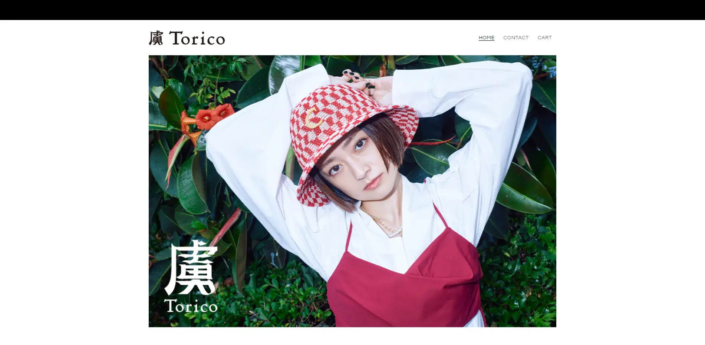
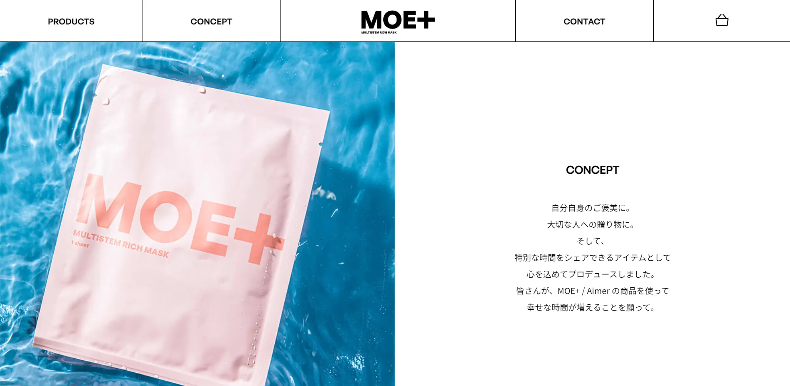
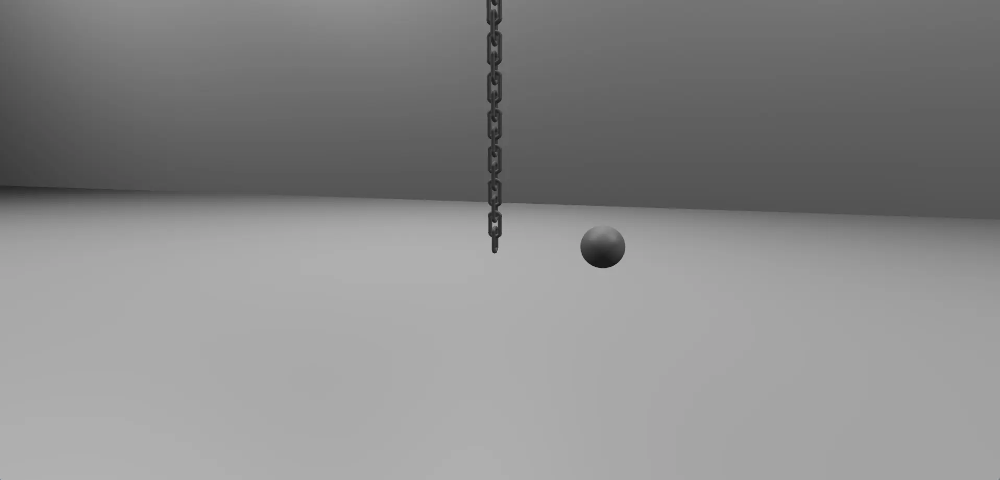
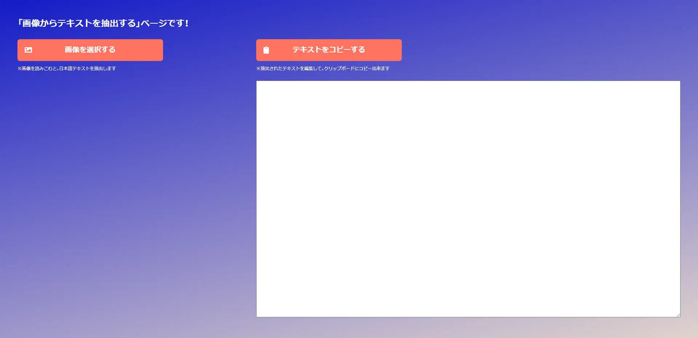

Kazuhiro Natori
―markup engineer
skills
web
- HTML
- Pug
- CSS,SASS,SCSS
- JavaScript
- jQuery
- Gulp,npm-scripts
- Git,Gitlab
- Markdown
- VSCode
design
- Adobe Photoshop
- Adobe Illustrator
- Affinity Publisher
- Affinity Designer
- Affinity Photo
movie
- shooting
- XDCAM
- HDCAM
- editing
- XPRI NS
- Adobe Premiere Pro
- lighting
details
web―コーダー・マークアップエンジニア
HTML、CSS、JavaScriptなどを使用したコーディング、各種デバイスやクロスブラウザーの対応、レスポンシブWebデザインやアクセシビリティに関する知識があります。
その他にも、バージョン管理システムを使用したコード管理などのデータ管理、チーム内のナレッジ管理やルール制定、テンプレートエンジンなどを使用したマークアップの効率化を行ってきました。
AIの使用による制作の効率化にも関心があり、ChatGPTなどのAIを活用しています。
design―グラフィックデザイナー
Illustratorなどを使用して、WebやDTP、プロダクト用のグラフィックデザインを制作する事が出来ます。
ミニマルなデザインや精密な文字組みが得意です。
movie―動画カメラマン
XDCAMなどの業務用カメラでのスタジオ撮影、報道・ENG撮影と映像編集が可能です。
放送局での放映可能なクオリティで撮影を行う事が出来ます。
projects
虜

ECサイト(Shopify)―全ページのコーディング
HTML/CSS/JavaScript/Liquid/Shopify
テーマ・アプリ選定とテーマ編集のコーディング・テンプレート改修を行いました。
シンプルなトンマナで全体で一貫させるために、細かい配慮を行ってテンプレート改修やカスタムCSSを書きました。
商品表示の更新作業を、コード編集ではなくCMS内で完結出来るようにliquidで実装したのもポイントです。
moeplus

LPとECサイト(BASE)
LP―全LPのコーディング,BASE―全ページのテンプレート改修(一部デザイン提案)
HTML/CSS/JavaScript/BASE
4つのLPとBASEの各ページを横断するサイト設計になっています。
LPとBASE内でレギュレーションが違うという条件の中で、全てのページで見た目の違和感が出ないような実装・CSSレイアウトを行いました。
Three.jsの鎖

Webアニメーション―デザイン・コーディング
HTML/CSS/Three.js/JavaScript
Three.jsを使用してみたかったので制作しました。
鎖は自分の好きなオブジェクトです。標準のジオメトリーでは表現が難しかったので、そこが凝ったポイントです。
パスを使用して鎖の1つをつくり、それをループさせて鎖のように見せています。金属的なテクスチャーやスタジオライティングで、「写真のテクスチャーを使わずにリアルに見せる」ようにしました。
簡単なマウスインタラクションを実装したので、マウスを移動させてみてください。
画像から日本語テキストを抽出するページ

Webサイト―デザイン・コーディング
HTML/CSS/JavaScript/Python
画像から日本語テキストを抽出してテキスト化、抽出したテキストをクリップボードへのコピーが出来ます。
画像が中心のサイトを制作する際に、「altの文字起こし」を行いたいというモチベーションで作りました。
コードへのリテラシーに関わらず使用出来るようにしたかったので、ローカルからではなくブラウザから実行出来るようにしました。
ブラウザから実行出来るPythonのライブラリTesseractを利用しています。
Moribus
LP―コーディング
HTML/CSS/JavaScript/jQuery
適切なレスポンシブ対応をしつつ、パフォーマンスのいいサイトになるように工夫しました。
画像を多用したページですが、重いページにならないように工夫しています。
ヤーマン/ニードルリフトクリーム
LP―コーディング
HTML/CSS/JavaScript
動きの要件を満たしつつ、パフォーマンスのいいLPになるように実装しました。
選択肢によって表示が切り替わるアプリのような見た目にしています。
パフォーマンスの高いコーディング
モバイルフレンドリーなデザイン
スムーズなユーザーエクスペリエンス
ぜひコンタクトしてください